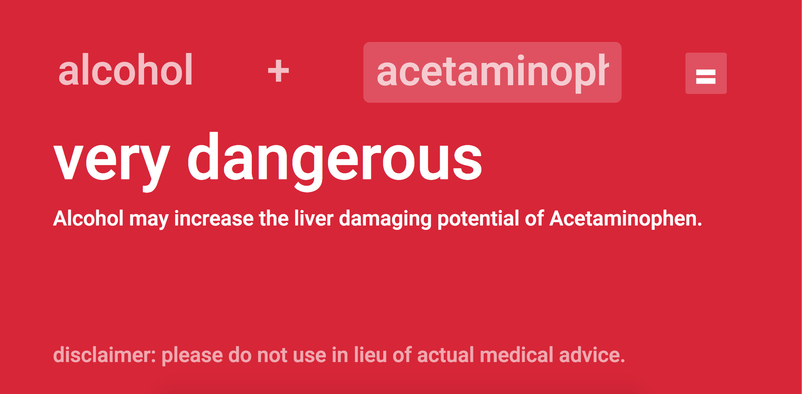
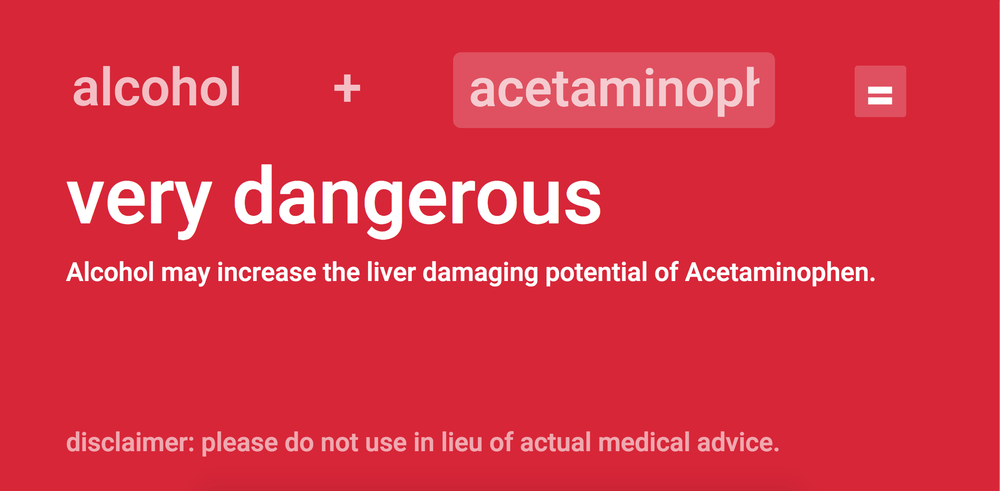

← back
Inter-alc-t
It's a question we've all heard before.
"This hangover's killing me. Can I take Tylenol?"
Sometimes, it's a bit more niche.
"Shit, I totally forgot I'm on Cephalex... And I'm a couple drinks in, should I be EMS'd?"

Inter-alc-t is a web app that lets the user quickly check the interaction between alcohol and one of thousands of drugs or medications, based on reliable data pulled from an NIH API. It was designed with accessibility as its primary priority. Drug interaction checkers do already exist, but UIs tend to be cluttered and non-intuitive – especially when not sober.

 

Large fonts and loud colors, coupled with a single-text-field interface and simple equation-esque format, ensure usability. Future directions include a mobile app, simplified interaction explanations, and increased support for colloquial drug names.
team:
a front-end developer, a back-end developer, and two pre-med students
personal contributions:
logo/visual branding, research